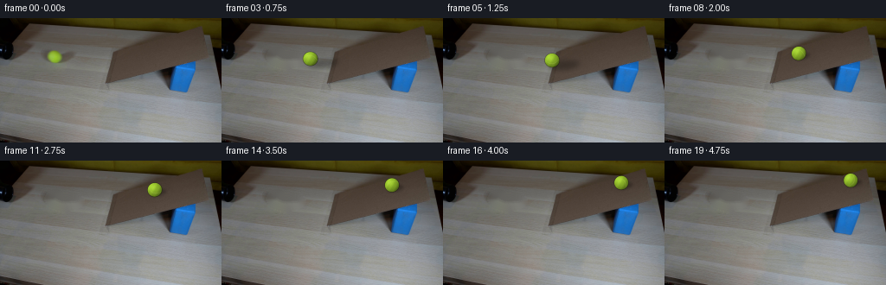
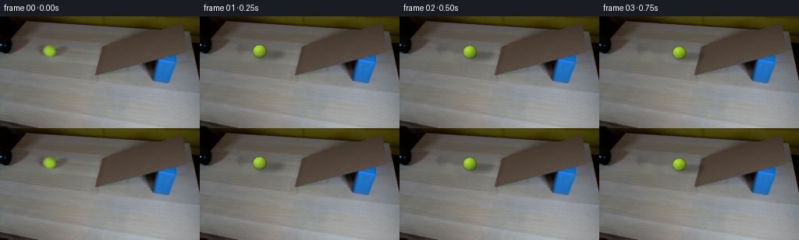
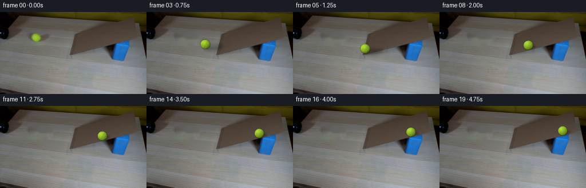
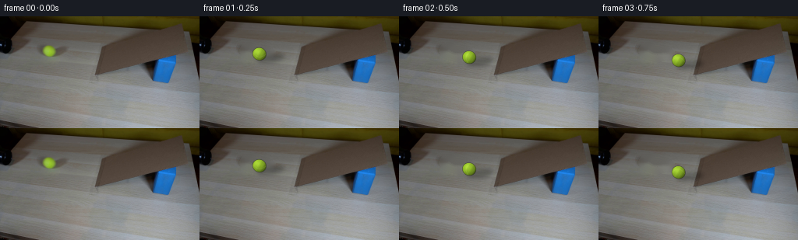
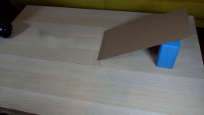
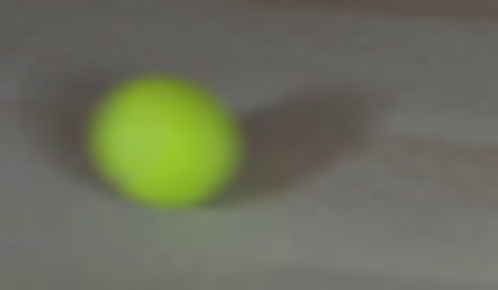

CODING AGENTS AS PIXEL WORLD MODELS
traex/GPT-5.6-Sol · 0021
点击播放 · 原生 RGB 像素
逐轮保存的候选
回放视频、检查图与代码变化。
每份候选均可单独播放。实际图片检查记录在下方工具轨迹中。
候选 01播放与检查图
点击播放 · 原生 RGB 像素


展开代码变化
--- 上一保存版本
+++ 本次保存版本
@@ -0,0 +1,147 @@
+from pathlib import Path
+import math
+import cv2
+import numpy as np
+from PIL import Image
+import artifact_io
+
+CASE_DIR = Path(__file__).resolve().parent
+W, H = 256, 144
+SCALE = 4
+
+
+def remove_initial_ball(rgb):
+ """Recover the tabletop behind the initial ball and its soft cast shadow."""
+ bgr = cv2.cvtColor(rgb, cv2.COLOR_RGB2BGR)
+ mask = np.zeros((H, W), np.uint8)
+ # Ball, penumbra and the narrow cast shadow toward lower right.
+ cv2.ellipse(mask, (63, 44), (12, 11), 0, 0, 360, 255, -1)
+ cv2.ellipse(mask, (77, 48), (20, 10), -4, 0, 360, 255, -1)
+ restored = cv2.inpaint(bgr, mask, 4, cv2.INPAINT_TELEA)
+ return cv2.cvtColor(restored, cv2.COLOR_BGR2RGB)
+
+
+def alpha_over(base, color, alpha):
+ a = np.clip(alpha[..., None], 0.0, 1.0)
+ return np.clip(base.astype(np.float32) * (1.0-a) + color.astype(np.float32) * a,
+ 0, 255).astype(np.uint8)
+
+
+def draw_shadow(frame, cx, cy, on_ramp, velocity):
+ # Direction agrees with the long shadow visible in the supplied first frame.
+ layer = np.zeros((H, W), np.float32)
+ if on_ramp:
+ sx, sy = cx + 4.0, cy + 3.5
+ ax, ay, opacity = 9.0, 3.0, 0.27
+ else:
+ sx, sy = cx + 14.0, cy + 5.0
+ ax, ay, opacity = 17.0, 5.2, 0.29
+ cv2.ellipse(layer, (round(sx), round(sy)), (round(ax), round(ay)),
+ -7 if not on_ramp else -15, 0, 360, opacity, -1, cv2.LINE_AA)
+ layer = cv2.GaussianBlur(layer, (0, 0), 3.0 if not on_ramp else 1.7)
+ dark = np.zeros_like(frame)
+ return alpha_over(frame, dark, layer)
+
+
+def ball_layer(cx, cy, distance, velocity):
+ """Analytically shade a fuzzy tennis ball at subpixel precision."""
+ sh, sw = H*SCALE, W*SCALE
+ yy, xx = np.mgrid[0:sh, 0:sw].astype(np.float32)
+ xx = (xx + 0.5) / SCALE
+ yy = (yy + 0.5) / SCALE
+
+ # A slight exposure-direction elongation conveys rolling at 4 fps without
+ # turning the ball into a streak.
+ speed = math.hypot(*velocity)
+ ux, uy = velocity
+ if speed > 1e-5:
+ ux, uy = ux/speed, uy/speed
+ else:
+ ux, uy = 1.0, 0.0
+ elong = min(0.75, speed * 0.045)
+ dx, dy = xx-cx, yy-cy
+ along = dx*ux + dy*uy
+ across = -dx*uy + dy*ux
+ r = 8.15
+ rho = np.sqrt((along/(r+elong))**2 + (across/r)**2)
+ edge = np.clip((1.055-rho)/0.105, 0.0, 1.0)
+
+ # Spherical normal and broad, upper-left light source.
+ nx = np.clip(dx/r, -1, 1)
+ ny = np.clip(dy/r, -1, 1)
+ nz = np.sqrt(np.clip(1.0-nx*nx-ny*ny, 0, 1))
+ illum = np.clip(0.61 + 0.34*((-0.48)*nx + (-0.55)*ny + 0.68*nz), 0.33, 1.0)
+ # Tennis felt: low-frequency deterministic fibres/noise tied to the ball.
+ angle = distance/r
+ texture = (np.sin((nx*9.0 + ny*5.0 + angle*2.0))*0.018 +
+ np.sin((nx*20.0 - ny*13.0 - angle*3.0))*0.010)
+ illum = np.clip(illum + texture, 0, 1.05)
+ base = np.zeros((sh,sw,3),np.float32)
+ base[...,0] = 166*illum
+ base[...,1] = 214*illum
+ base[...,2] = 48*illum
+ # Warm yellow-green highlight, matching the photographed source ball.
+ spec = np.exp(-((dx+2.4)**2 + (dy+2.8)**2)/(2*2.7**2))*0.17
+ base += spec[...,None]*np.array([105,105,68],np.float32)
+
+ # Rotating curved cream-colored tennis seam. The band is deliberately
+ # subtle at this image scale.
+ ca, sa = math.cos(angle), math.sin(angle)
+ qx = nx*ca + ny*sa
+ qy = -nx*sa + ny*ca
+ seam_d = np.abs(qx - (0.48 - 0.56*qy*qy))
+ seam = np.exp(-(seam_d/0.045)**2) * (rho < 0.94)
+ seam_alpha = seam*0.24
+ felt = np.array([205,220,112],np.float32)
+ base = base*(1-seam_alpha[...,None]) + felt*seam_alpha[...,None]
+
+ rgba = np.empty((sh,sw,4),np.float32)
+ rgba[...,:3] = np.clip(base,0,255)
+ rgba[...,3] = edge
+ # Camera/source image is mildly soft.
+ rgba[...,:3] *= rgba[...,3:4]
+ rgb_small = cv2.resize(rgba[...,:3], (W,H), interpolation=cv2.INTER_AREA)
+ a_small = cv2.resize(rgba[...,3], (W,H), interpolation=cv2.INTER_AREA)
+ rgb_small = cv2.GaussianBlur(rgb_small, (0,0), 0.22)
+ return rgb_small, np.clip(a_small,0,1)
+
+
+def trajectory(f):
+ # The launch is fast enough to climb the cardboard incline, but gravity
+ # steadily reduces its speed. Coordinates follow the ramp's perspective.
+ s = 14.2*f - 0.315*f*f
+ ds = 14.2 - 0.63*f
+ if s <= 65.0:
+ t = s/65.0
+ x = 63.0 + 65.0*t
+ y = 44.0 + 5.0*t
+ vx = ds
+ vy = ds*(5.0/65.0)
+ on_ramp = False
+ else:
+ q = s-65.0
+ x = 128.0 + 0.958*q
+ y = 49.0 - 0.287*q
+ vx = ds*0.958
+ vy = -ds*0.287
+ on_ramp = True
+ return x,y,on_ramp,s,(vx,vy)
+
+
+def make_frames():
+ original = np.asarray(Image.open(CASE_DIR/'first_frame.png').convert('RGB'), dtype=np.uint8)
+ clean = remove_initial_ball(original)
+ frames = [original.copy()] # Contract: absolutely pixel-identical frame 00.
+ for f in range(1,20):
+ cx,cy,on_ramp,s,vel = trajectory(f)
+ frame = draw_shadow(clean.copy(),cx,cy,on_ramp,vel)
+ ball_rgb, alpha = ball_layer(cx,cy,s,vel)
+ frame = alpha_over(frame, ball_rgb, alpha)
+ frames.append(frame)
+ return np.stack(frames).astype(np.uint8)
+
+
+if __name__ == '__main__':
+ frames = make_frames()
+ assert np.array_equal(frames[0], np.asarray(Image.open(CASE_DIR/'first_frame.png').convert('RGB')))
+ artifact_io.save(frames, CASE_DIR)
候选 02播放与检查图
点击播放 · 原生 RGB 像素


展开代码变化
--- 上一保存版本
+++ 本次保存版本
@@ -114,16 +114,19 @@
if s <= 65.0:
t = s/65.0
x = 63.0 + 65.0*t
- y = 44.0 + 5.0*t
+ # Perspective makes a straight table-space run from the pipe angle
+ # gently toward the near/lower end of the incline.
+ y = 44.0 + 21.0*t
vx = ds
- vy = ds*(5.0/65.0)
+ vy = ds*(21.0/65.0)
on_ramp = False
else:
q = s-65.0
x = 128.0 + 0.958*q
- y = 49.0 - 0.287*q
+ # Then it climbs along the visible near edge of the cardboard plane.
+ y = 65.0 - 0.235*q
vx = ds*0.958
- vy = -ds*0.287
+ vy = -ds*0.235
on_ramp = True
return x,y,on_ramp,s,(vx,vy)
可观测工具轨迹
实际执行的命令与返回图片。
命令 1exit 0
/bin/bash -lc "cat GENERATION_RULES.md && printf '\\n---PROMPT---\\n' && cat prompt.txt"
命令 2exit 127
/bin/bash -lc "ls -la && file first_frame.png && python3 - <<'PY'
from PIL import Image
im=Image.open('first_frame.png'); print(im.size, im.mode)
PY"命令 3exit 0
/bin/bash -lc "sed -n '1,240p' artifact_io.py"
命令 4exit 0
/bin/bash -lc "python3 - <<'PY'
from PIL import Image
im=Image.open('first_frame.png'); print(im.size, im.mode)
import cv2, numpy as np
x=np.array(im)
print(x.shape, x.dtype, x.min(),x.max())
PY"命令 5exit 0
/bin/bash -lc "python3 - <<'PY'
from PIL import Image
im=Image.open('first_frame.png'); im.resize((1024,576)).save('.tmp/up.png')
PY"命令 6exit 0
/bin/bash -lc "python3 - <<'PY'
import cv2, numpy as np
im=cv2.imread('first_frame.png')
hsv=cv2.cvtColor(im,cv2.COLOR_BGR2HSV)
for y,x in [(44,63),(40,63),(48,63),(44,56),(44,70),(49,78),(45,80)]: print(x,y,im[y,x].tolist(),hsv[y,x].tolist())
# bbox threshold green/yellow
m=((hsv[:,:,0]>20)&(hsv[:,:,0]<50)&(hsv[:,:,1]>80)&(hsv[:,:,2]>70)).astype(np.uint8)
n,l,st,c=cv2.connectedComponentsWithStats(m)
for i in range(1,n):
if st[i,4]>5: print(st[i].tolist(), c[i])
PY"命令 7exit 0
/bin/bash -lc "cat > .tmp/test_inpaint.py <<'PY'
import cv2, numpy as np
im=cv2.imread('first_frame.png')
mask=np.zeros(im.shape[:2],np.uint8)
cv2.ellipse(mask,(63,44),(12,11),0,0,360,255,-1)
cv2.ellipse(mask,(77,48),(19,10),0,0,360,255,-1)
# avoid overkill union ellipse overall
out=cv2.inpaint(im,mask,4,cv2.INPAINT_TELEA)
cv2.imwrite('.tmp/inpaint.png',out)
PY
python3 .tmp/test_inpaint.py"命令 8exit 0
/bin/bash -lc "python3 - <<'PY'
from PIL import Image
im=Image.open('first_frame.png'); im.crop((45,29,100,61)).resize((550,320)).save('.tmp/crop.png')
PY"命令 9exit 0
/bin/bash -lc "python3 - <<'PY'
from PIL import Image
import numpy as np
x=np.array(Image.open('first_frame.png'))
for y in range(38,52,2):
print(y,[x[y,z].tolist() for z in range(55,72,3)])
PY"命令 10exit 0
/bin/bash -lc "cat > generate.py <<'PY'
from pathlib import Path
import math
import cv2
import numpy as np
from PIL import Image
import artifact_io
CASE_DIR = Path(__file__).resolve().parent
W, H = 256, 144
SCALE = 4
def remove_initial_ball(rgb):
\"\"\"Recover the tabletop behind the initial ball and its soft cast shadow.\"\"\"
bgr = cv2.cvtColor(rgb, cv2.COLOR_RGB2BGR)
mask = np.zeros((H, W), np.uint8)
# Ball, penumbra and the narrow cast shadow toward lower right.
cv2.ellipse(mask, (63, 44), (12, 11), 0, 0, 360, 255, -1)
cv2.ellipse(mask, (77, 48), (20, 10), -4, 0, 360, 255, -1)
restored = cv2.inpaint(bgr, mask, 4, cv2.INPAINT_TELEA)
return cv2.cvtColor(restored, cv2.COLOR_BGR2RGB)
def alpha_over(base, color, alpha):
a = np.clip(alpha[..., None], 0.0, 1.0)
return np.clip(base.astype(np.float32) * (1.0-a) + color.astype(np.float32) * a,
0, 255).astype(np.uint8)
def draw_shadow(frame, cx, cy, on_ramp, velocity):
# Direction agrees with the long shadow visible in the supplied first frame.
layer = np.zeros((H, W), np.float32)
if on_ramp:
sx, sy = cx + 4.0, cy + 3.5
ax, ay, opacity = 9.0, 3.0, 0.27
else:
sx, sy = cx + 14.0, cy + 5.0
ax, ay, opacity = 17.0, 5.2, 0.29
cv2.ellipse(layer, (round(sx), round(sy)), (round(ax), round(ay)),
-7 if not on_ramp else -15, 0, 360, opacity, -1, cv2.LINE_AA)
layer = cv2.GaussianBlur(layer, (0, 0), 3.0 if not on_ramp else 1.7)
dark = np.zeros_like(frame)
return alpha_over(frame, dark, layer)
def ball_layer(cx, cy, distance, velocity):
\"\"\"Analytically shade a fuzzy tennis ball at subpixel precision.\"\"\"
sh, sw = H*SCALE, W*SCALE
yy, xx = np.mgrid[0:sh, 0:sw].astype(np.float32)
xx = (xx + 0.5) / SCALE
yy = (yy + 0.5) / SCALE
# A slight exposure-direction elongation conveys rolling at 4 fps without
# turning the ball into a streak.
speed = math.hypot(*velocity)
ux, uy = velocity
if speed > 1e-5:
ux, uy = ux/speed, uy/speed
else:
ux, uy = 1.0, 0.0
elong = min(0.75, speed * 0.045)
dx, dy = xx-cx, yy-cy
along = dx*ux + dy*uy
across = -dx*uy + dy*ux
r = 8.15
rho = np.sqrt((along/(r+elong))**2 + (across/r)**2)
edge = np.clip((1.055-rho)/0.105, 0.0, 1.0)
# Spherical normal and broad, upper-left light source.
nx = np.clip(dx/r, -1, 1)
ny = np.clip(dy/r, -1, 1)
nz = np.sqrt(np.clip(1.0-nx*nx-ny*ny, 0, 1))
illum = np.clip(0.61 + 0.34*((-0.48)*nx + (-0.55)*ny + 0.68*nz), 0.33, 1.0)
# Tennis felt: low-frequency deterministic fibres/noise tied to the ball.
angle = distance/r
texture = (np.sin((nx*9.0 + ny*5.0 + angle*2.0))*0.018 +
np.sin((nx*20.0 - ny*13.0 - angle*3.0))*0.010)
illum = np.clip(illum + texture, 0, 1.05)
base = np.zeros((sh,sw,3),np.float32)
base[...,0] = 166*illum
base[...,1] = 214*illum
base[...,2] = 48*illum
# Warm yellow-green highlight, matching the photographed source ball.
spec = np.exp(-((dx+2.4)**2 + (dy+2.8)**2)/(2*2.7**2))*0.17
base += spec[...,None]*np.array([105,105,68],np.float32)
# Rotating curved cream-colored tennis seam. The band is deliberately
# subtle at this image scale.
ca, sa = math.cos(angle), math.sin(angle)
qx = nx*ca + ny*sa
qy = -nx*sa + ny*ca
seam_d = np.abs(qx - (0.48 - 0.56*qy*qy))
seam = np.exp(-(seam_d/0.045)**2) * (rho < 0.94)
seam_alpha = seam*0.24
felt = np.array([205,220,112],np.float32)
base = base*(1-seam_alpha[...,None]) + felt*seam_alpha[...,None]
rgba = np.empty((sh,sw,4),np.float32)
rgba[...,:3] = np.clip(base,0,255)
rgba[...,3] = edge
# Camera/source image is mildly soft.
rgba[...,:3] *= rgba[...,3:4]
rgb_small = cv2.resize(rgba[...,:3], (W,H), interpolation=cv2.INTER_AREA)
a_small = cv2.resize(rgba[...,3], (W,H), interpolation=cv2.INTER_AREA)
rgb_small = cv2.GaussianBlur(rgb_small, (0,0), 0.22)
return rgb_small, np.clip(a_small,0,1)
def trajectory(f):
# The launch is fast enough to climb the cardboard incline, but gravity
# steadily reduces its speed. Coordinates follow the ramp's perspective.
s = 14.2*f - 0.315*f*f
ds = 14.2 - 0.63*f
if s <= 65.0:
t = s/65.0
x = 63.0 + 65.0*t
y = 44.0 + 5.0*t
vx = ds
vy = ds*(5.0/65.0)
on_ramp = False
else:
q = s-65.0
x = 128.0 + 0.958*q
y = 49.0 - 0.287*q
vx = ds*0.958
vy = -ds*0.287
on_ramp = True
return x,y,on_ramp,s,(vx,vy)
def make_frames():
original = np.asarray(Image.open(CASE_DIR/'first_frame.png').convert('RGB'), dtype=np.uint8)
clean = remove_initial_ball(original)
frames = [original.copy()] # Contract: absolutely pixel-identical frame 00.
for f in range(1,20):
cx,cy,on_ramp,s,vel = trajectory(f)
frame = draw_shadow(clean.copy(),cx,cy,on_ramp,vel)
ball_rgb, alpha = ball_layer(cx,cy,s,vel)
frame = alpha_over(frame, ball_rgb, alpha)
frames.append(frame)
return np.stack(frames).astype(np.uint8)
if __name__ == '__main__':
frames = make_frames()
assert np.array_equal(frames[0], np.asarray(Image.open(CASE_DIR/'first_frame.png').convert('RGB')))
artifact_io.save(frames, CASE_DIR)
PY
python3 generate.py"命令 11exit 0
/bin/bash -lc "python3 generate.py && python3 - <<'PY'
import numpy as np
from PIL import Image
f=np.array(Image.open('first_frame.png'))
z=np.load('pixels.npz')['pixels']
r=np.stack([(z[:,:,0]>>16)&255,(z[:,:,0]>>8)&255,z[:,:,0]&255],-1).astype('uint8')
print('first frame exact:',np.array_equal(f,r), 'pixels',z.shape,z.dtype)
PY"视觉工具实际返回图片 1

视觉工具实际返回图片 2

视觉工具实际返回图片 3

视觉工具实际返回图片 4

视觉工具实际返回图片 5

视觉工具实际返回图片 6

视觉工具实际返回图片 7

保存候选 2 份；完成命令 11 次；可验证图片返回 7 张。原始 API 响应与完整日志保留在本地。